Doce comparativas para dominar el bloque C1 de Estructuras: cargas puntuales, repartidas, voladizo, ménsulas, superposición y perturbaciones. Cada ficha enfrenta dos casos lado a lado para que la diferencia se vea de un golpe.
Las fichas están ordenadas en tres niveles de dificultad creciente. Empieza por las troncales: si las dominas, las demás caen como variaciones.
🔴 Nivel 1
Troncal · lo que no puedes fallar
Las siete ideas base. Si dominas estas siete, todo el resto del bloque C1 cae por su propio peso.
F1
Carga puntual centrada vs carga repartida (misma resultante)
Mismas reacciones, pero al repartir la carga el momento máximo se reduce a la mitad. La lección base de la flexión: por qué una losa con peso propio repartido necesita menos canto que la misma losa cargada en el centro.
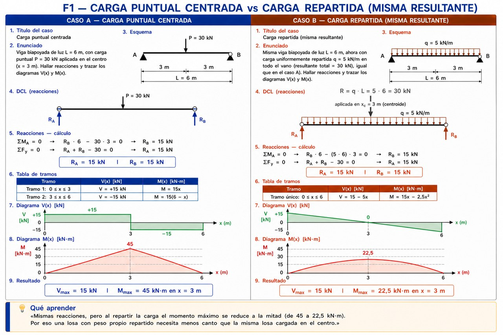
F2
Una vs dos cargas puntuales simétricas
Reacciones idénticas, pero el momento máximo cae de 30 a 20 kN·m y aparece una meseta constante entre las dos cargas. Esa zona de momento plano es la sección crítica para el armado.
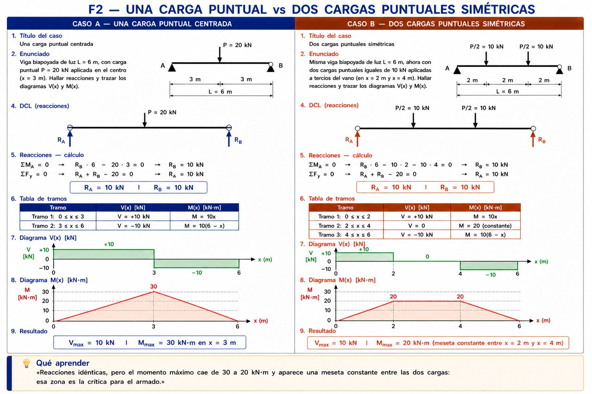
F3
Carga repartida total vs parcial (3 m centrales)
Al concentrar la carga sólo en los 3 m centrales, las reacciones bajan a la mitad y M_max también. El diagrama M(x) deja de ser una parábola pura: es recta en los tramos sin carga y parábola sólo en el tramo cargado.
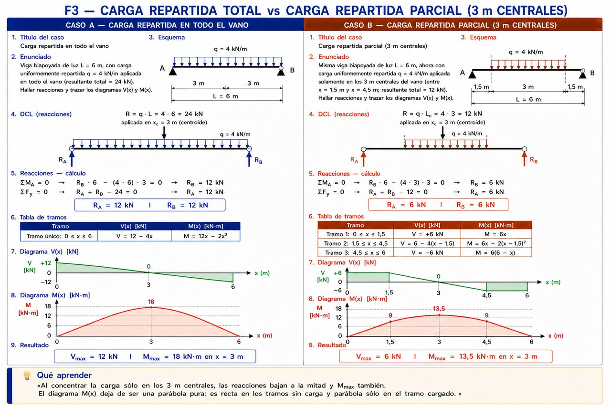
F4
Biapoyada vs ménsula con la misma carga
Misma luz y misma carga, pero los diagramas son radicalmente distintos: la ménsula soporta cuatro veces más momento (80 frente a 20 kN·m) y el máximo aparece en el empotramiento, no en el centro. Por eso una ménsula necesita mucho más canto.
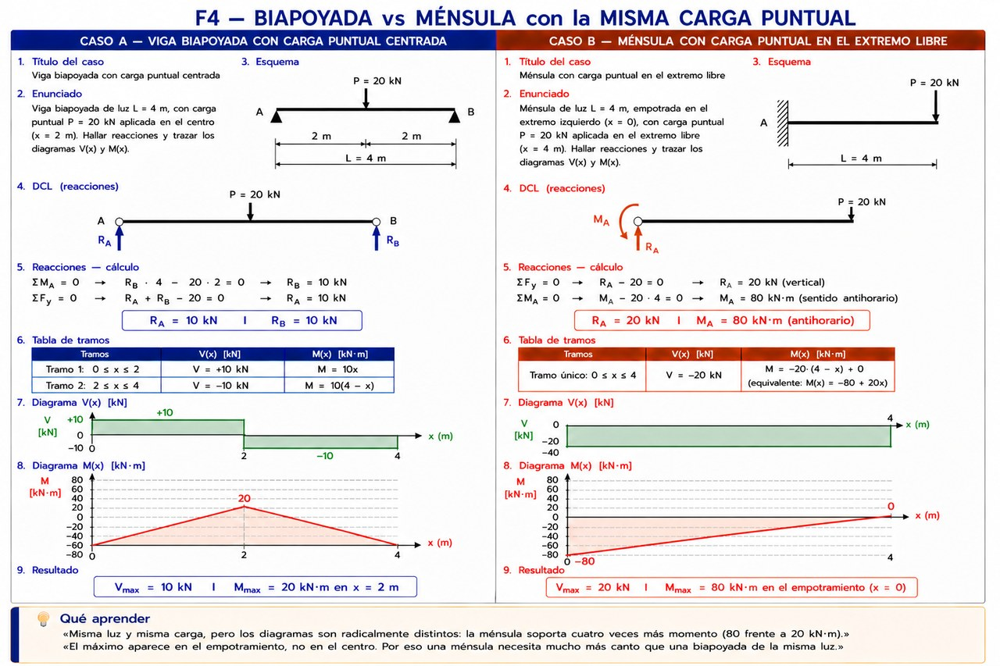
F5
Ménsula empotrada izquierda vs derecha
Las reacciones son idénticas en módulo (15 kN y 60 kN·m) y el momento máximo siempre aparece en el empotramiento, sea izquierdo o derecho. Cambiar el lado sólo invierte el signo del diagrama, no las solicitaciones reales.
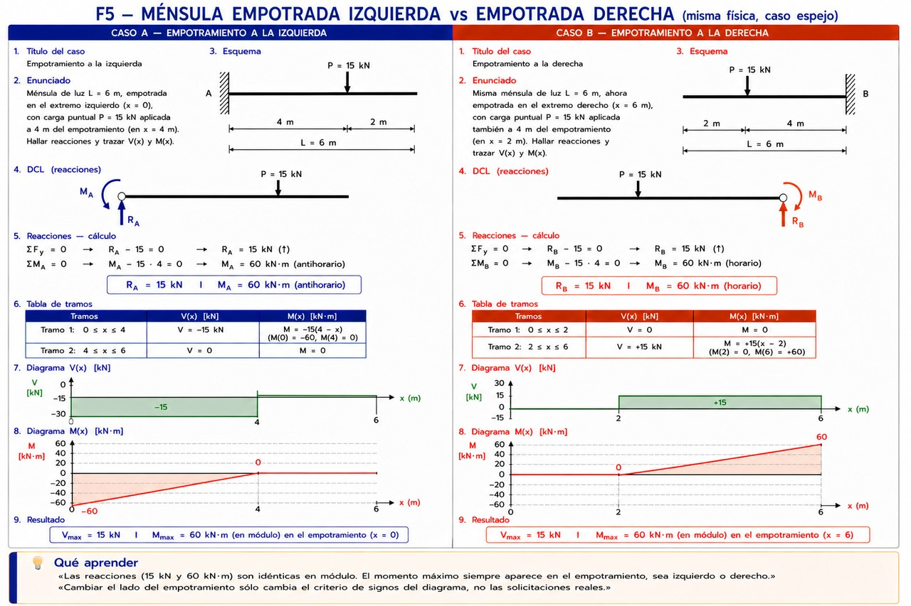
F6
Análisis izquierda→derecha vs derecha→izquierda
Los diagramas V(x) y M(x) no dependen de desde dónde cortes la viga: la flexión es una propiedad de la estructura, no del observador. Cortar desde el lado de menos carga ahorra pasos en voladizos asimétricos.
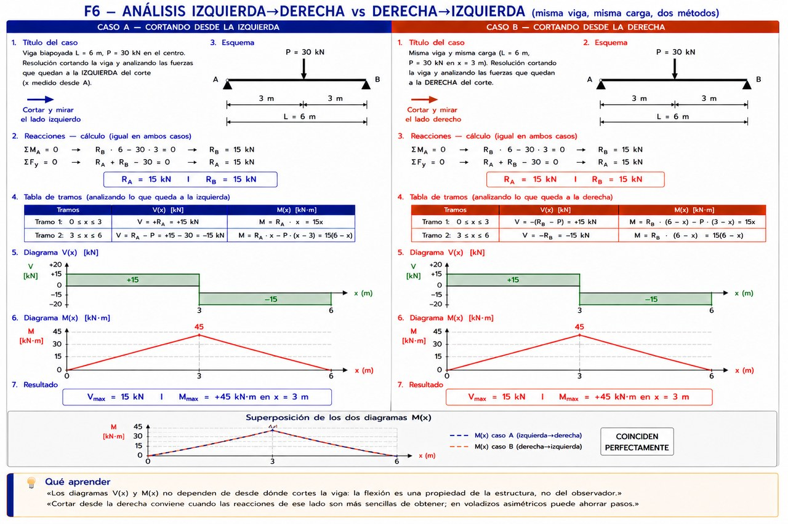
F7
Carga simétrica vs carga excéntrica
Cuando la carga está centrada, las reacciones son iguales y el momento máximo está en el centro. Cuando se desplaza, las reacciones son distintas (el apoyo más cercano reacciona más) y el momento máximo aparece bajo la carga, no en el centro geométrico de la viga.
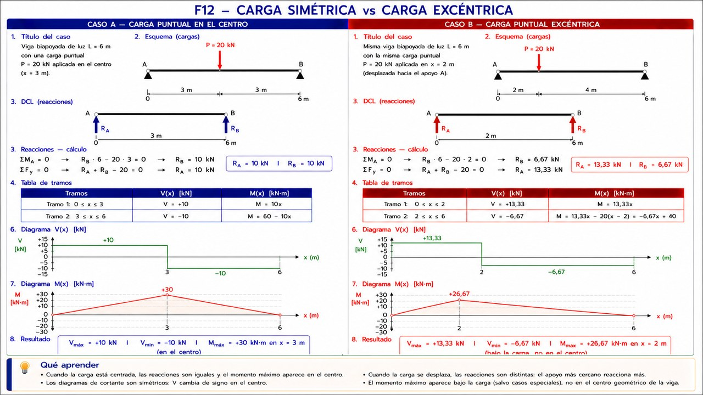
🟠 Nivel 2
Comportamiento real de estructuras
Aquí dejas de “aplicar fórmulas” y empiezas a entender dónde rompe la estructura. Imprescindible para PEvAU si quieres asegurar el problema.
F8
Voladizo · carga puntual en el voladizo vs en el vano
Cuando la carga está en el voladizo, el momento crítico aparece sobre el apoyo y es NEGATIVO (tracciona las fibras superiores). Cuando está en el vano, es positivo y aparece en el centro. Las losas con voladizo necesitan armadura SUPERIOR sobre el apoyo.
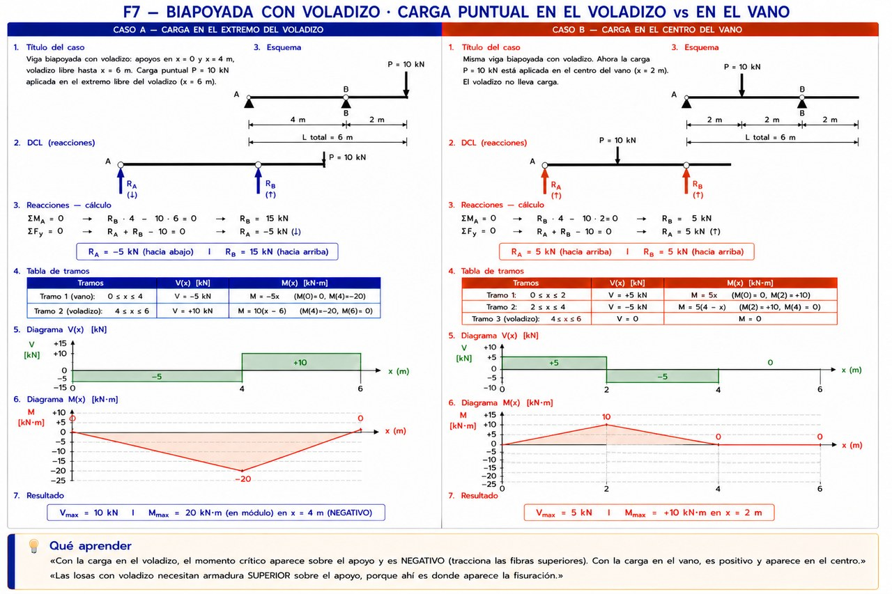
F9
Voladizo · repartida sólo en el vano vs en todo el conjunto
Cuando la repartida invade el voladizo, aparece un pico negativo sobre el apoyo cercano además del positivo del vano. Si el momento negativo es mayor en módulo, la sección crítica para armar pasa al apoyo, no al centro del vano.
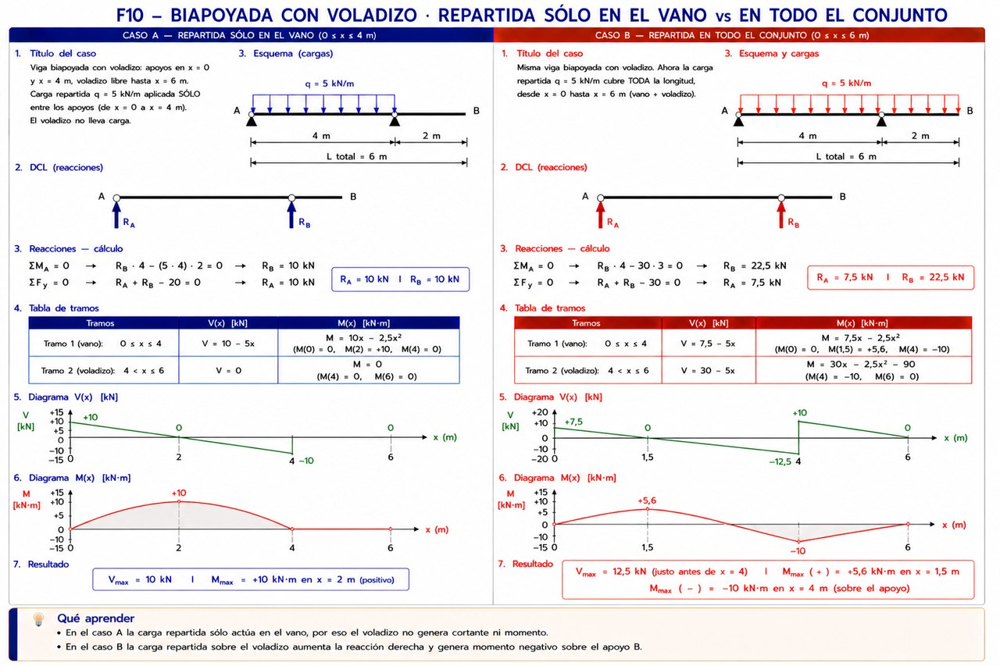
F10
Voladizo · carga puntual en el voladizo vs en todo el conjunto
Las reacciones cambian de signo cuando la carga se desplaza al voladizo. Cortar desde el extremo libre del voladizo simplifica el cálculo: el momento es nulo en el extremo y crece hacia el apoyo.
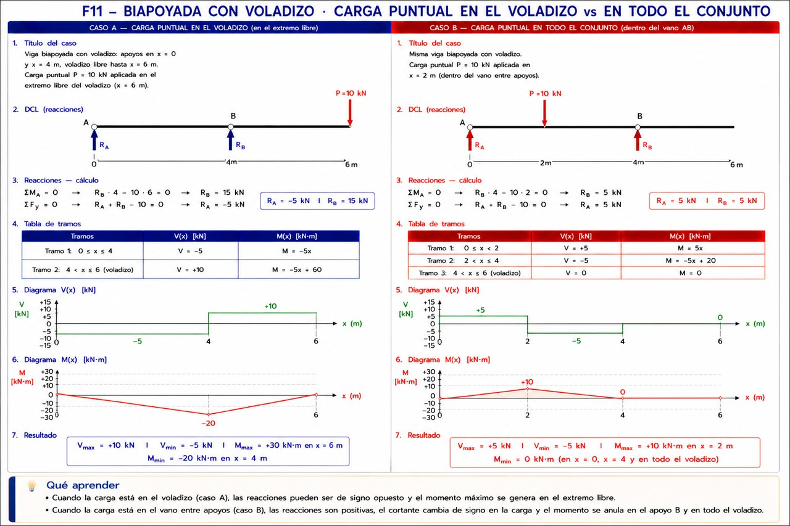
🔵 Nivel 3
Alto nivel · ir sobrado al examen
Conceptos finos que separan al alumno medio del que va seguro. No son imprescindibles para aprobar, pero te dan argumentos en los problemas más difíciles del banco.
F11
Superposición · puntual sola vs puntual + repartida
El diagrama final es la suma punto a punto del diagrama de la puntual sola más el de la repartida sola. Las reacciones también se suman. Cuando una viga lleva varias cargas a la vez no hay que volver a empezar: se calcula cada efecto por separado y se superponen.
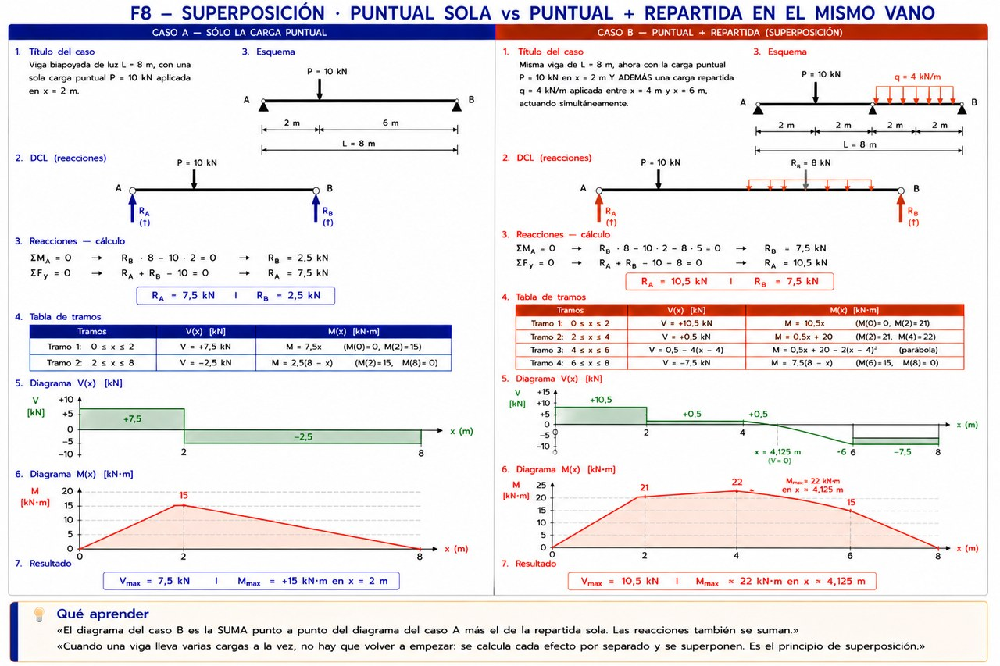
F12
Cargas mixtas · todas hacia abajo vs con perturbación hacia arriba
La perturbación hacia arriba alivia los apoyos: las reacciones bajan a un tercio y M_max cae a un cuarto. El cortante zigzaguea cambiando de signo varias veces, y el momento se anula en el punto de la perturbación en lugar de tener su máximo allí. Caso típico de tirantes y puntales.